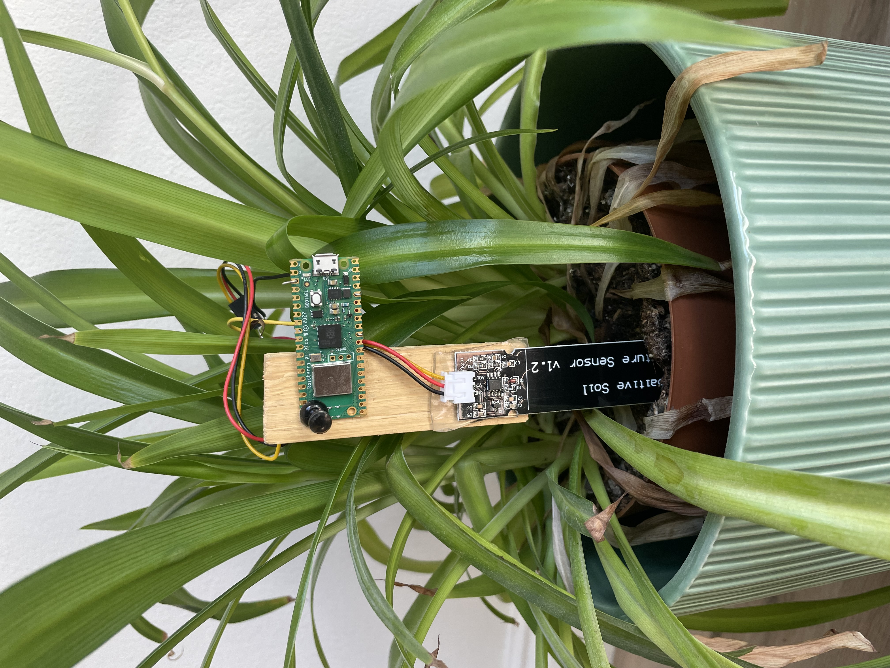

Plantifer
This project is currently being built, but the main components of it are done. The project contains three components, the physical device, a CNN I trained, and a mobile app.
The Physical Device
A Raspberry Pi Pico W will detect a plant's moisture level using a capcative soil moisture sensor. It also hosts a TCP server that when prompted by a client will send an 8 bit integer representing the moisture percentage to the client.
